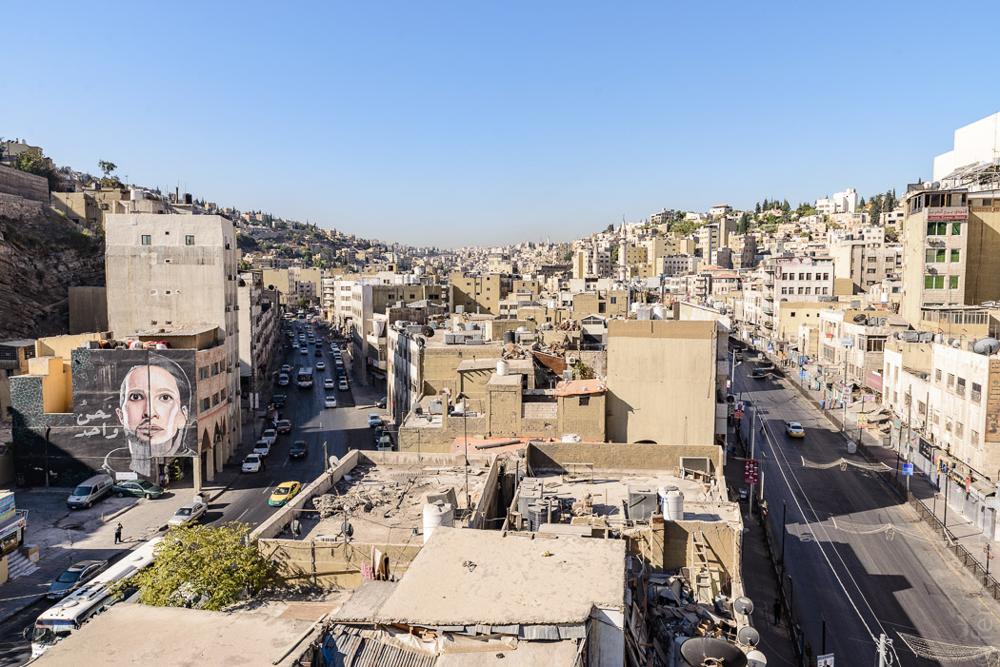

17/09/2016
Amman
Mit dem Taxi kommen wir vom Flughafen zum Festpreis in die Stadt. Die abendlichen Vorstädte sind wie überall: langweilig, heruntergekommen. Der Taxifahrer bietet uns sehr zuvorkommend Zigaretten an, bevor er sich selbst eine ansteckt. Richtung Stadt wird es hügliger, dann gehen die Straßen auch schon steil bergab oder -auf. Unser Fahrer spricht kein Englisch, fängt aber nach der Bezahlung von 20 Dinar ein Palaver an. Wir denken, dass er Trinkgeld will und legen ihm noch zwei Dinar drauf. Noch mehr Aufregung, er deutet an, den Schein zu zerreißen. Meint er, wir sollten den Preis pro Kopf bezahlen? Er zeigt arabische Zahlen auf seinem Handy. Das hilft genau so gut wie das gesprochene Arabisch zuvor. Dann findet er auf der Rückseite unserer Quittung endlich eine "18", die wir lesen können. Und das ist es dann: Wir haben zu viel bezahlt und er kann nicht rausgeben. Also keine Abzocke, sondern der ehrlichste Taxifahrer aller Zeiten. Ein guter Start.
Das Hostel "Jordan Tower" ist ziemlich einfach, aber sauber. Wir machen uns frisch und brechen zu einem Spaziergang auf. Wir sind im Zentrum der Stadt, wo es zwar sehr laut aber auch schön belebt ist. Es ist nach 22 Uhr, aber alle Geschäfte haben noch offen - Samstag ist hier ja Montag. Die Gewürzstände verströmen orientalischen Flair, in kleinen Büdchen werden Falafel frittiert, die Männer tragen Tüten mit Fladenbrot, die Frauen Kopftuch. Vor einem Laden mit arabischen Süßigkeiten ist eine Schlange bis auf die Straße. Leider ist uns eher nach Herzhaftem. Das finden wir bei Hashimi, einer berühmten Falafel-Bräterei. Der Kellner ist Bayern-München Fan, das ist schnell geklärt, und die Falafel sind zurecht berühmt. Bei herrlich lauer Temperatur lassen wir es uns gut gehen. Auf dem Rückweg sehen wir noch ein paar schön gemachte Lokale, die wir uns alle für den kommenden Tag merken wollen, und sofort wieder vergessen.
